Lomo vetado
La grasa entreverada lo deja jugoso. El clásico de la parrilla.
Carnicería SUCARNE · San Fernando y Rancagua
Vacuno, cerdo, pollo y cecinas. Te decimos cuál pedir y para qué sirve cada uno, con los nombres de acá.
Guía de cortes
Dinos qué vas a cocinar y te decimos qué pedir. Con los nombres de acá, para que llegues al mostrador sabiendo exactamente qué llevar.
27 cortes
La grasa entreverada lo deja jugoso. El clásico de la parrilla.
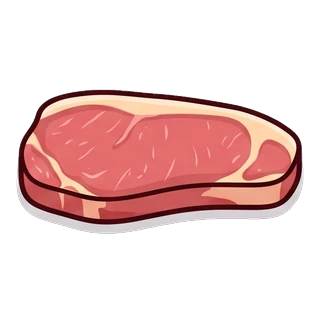
Magro y parejo. Se corta fácil y rinde bien.
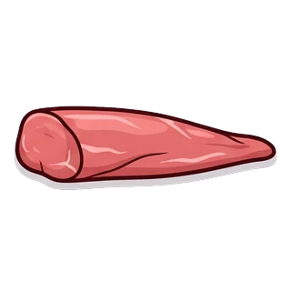
El más blando de todos. Poco tiempo y fuego fuerte.
Con hueso, que es donde está el sabor. A fuego lento.
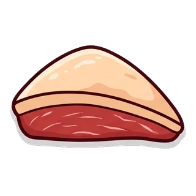
Una pieza entera para el asado, se corta después.
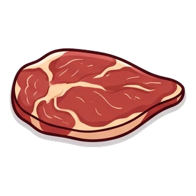
Más económica que la de ganso y aguanta igual.
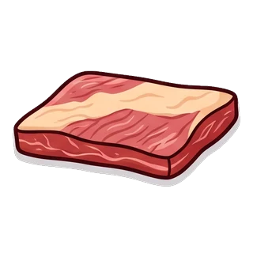
Cocción larga y queda deshilachándose sola.
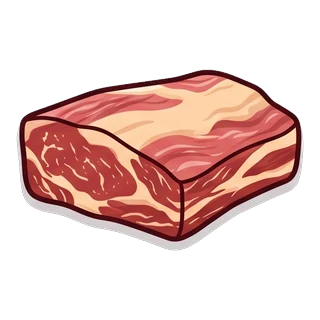
Para el puchero y la carne mechada.
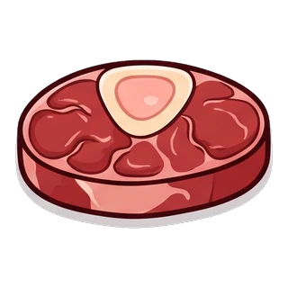
Con hueso y médula. Le da cuerpo al caldo.
Magra y versátil. Sirve para casi todo.
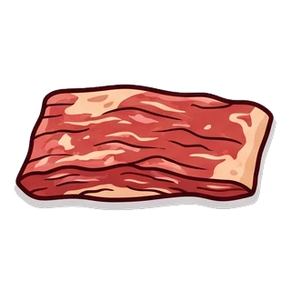
Para la cazuela de vacuno de toda la vida.
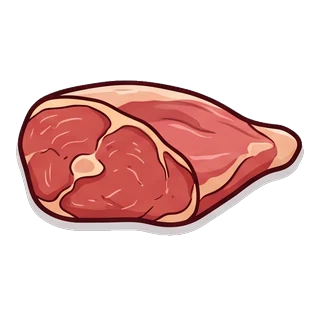
Carne mechada y guisos de cocción larga.
Arrollada y al horno, o cocida y prensada.
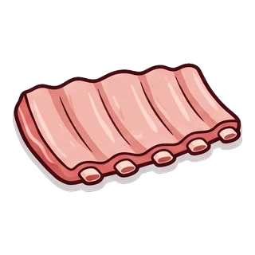
La estrella del 18. Lento y con la grasa hacia arriba.
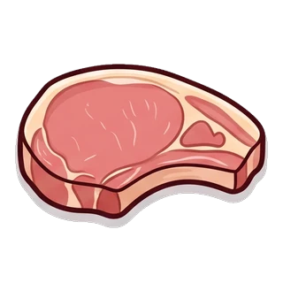
Rápida y pareja. No la pases de cocción.
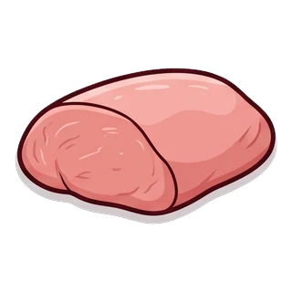
Magra, para filetear o hacer al jugo.
Entero al horno queda de lujo.
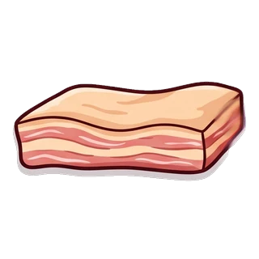
Crujiente por fuera y blanda por dentro.
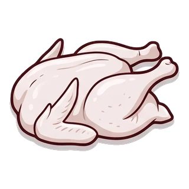
Al horno o abierto a la mariposa en la parrilla.
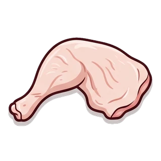
Aguanta bien el fuego y no se seca.
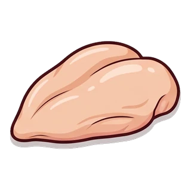
La más magra. Cuidado con pasarla.
Para picar antes de que salga el asado.
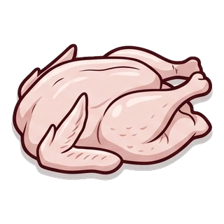
Para la mesa grande. Encárgalo con anticipación.
Pínchala y a fuego medio para que no reviente.
Para el choripán de la previa.
Va al final, que solo necesita calentarse.
La disponibilidad cambia según el día. Si buscas un corte en particular, escríbenos y te decimos al tiro si lo tenemos.
Visítanos en nuestras sucursales o contáctanos y te ayudamos a elegir los mejores cortes.